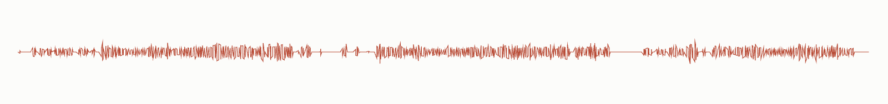

AI-generated demonstration
Donald Trump
“I’m Donald Trump. Welcome to Yuxuan’s academic exchange.”
CloneBlock-RT / Trustworthy speech generation
Through human perception.
Can a recording remain useful to people, while becoming a poor reference for voice cloning?
What voice cloning makes possible
TTS speaks new text. Voice conversion keeps an existing utterance’s content and changes who appears to be speaking. Both can use the vocal cues in a reference recording.
AI-generated demonstration
“I’m Donald Trump. Welcome to Yuxuan’s academic exchange.”
AI-generated demonstration
“Hello everyone. I’m Lei Jun. Welcome to Yuxuan’s academic exchange.”

AI-generated demonstration
“Hello! I’m Nailoong. Let’s learn how to protect our voices.”
These are synthetic imitations made for a research presentation, not authentic statements or endorsements. Original conditioning recordings are not distributed here. Voice likeness remains a listening judgment.
The accompanying talk covers Seed-VC v2, CosyVoice3, Qwen3-TTS, Chatterbox Turbo, VoxCPM2, Fish S2 and F5-TTS. This list records research coverage, not protection success across those models. The demonstrations above use a fixed Qwen3-TTS 1.7B Base checkpoint.
Trump reference source / DVIDS · Lei Jun reference source · Nailoong dataset / pengyichen / CC BY-NC-SA 4.0
The other side of convincing generation
Cloning can support consensual personalized speech. It can also support fraud and impersonation. These reports motivate the problem; they do not test or endorse our method.

A mother reported hearing what sounded like her daughter during a kidnapping hoax, then confirmed her daughter was safe. This is a reported suspected cloning incident, not a forensic identification of the system.
ABC News report / April 2023Watch the report
Hong Kong police described a roughly $25 million scam involving both synthetic visual and voice impersonation.
CNN report / February 2024
An AI-generated Biden impersonation told voters to skip the New Hampshire primary.
CBS report / January 2024Watch the reportThe images are publisher illustrations or news imagery, not recordings of the scams themselves. These reports motivate the work; they do not establish the effectiveness of the protection examples.
The question behind the research
The same protected recording must pass two different listening tests.
Identity remains recognizable, the message stays intact, and normal communication remains possible.
The unchanged cloner reads that same WAV. Its output should lose the original identity, while a matched clone from the original must first work.
Why we revisited the measurement
Speaker encoders such as ECAPA offer convenient numbers. In these selected reproductions, the scores and the developer listener’s identity judgments disagreed. Hear the original, the clean clone, then the protected clone.
ECAPA cosine, higher means more similar
0.772to0.291
Development judgment: both clones still sounded like the same speaker and remained usable.
ECAPA cosine, higher means more similar
0.555to0.292
Development judgment: the protected clone still sounded probably like the original speaker, with no use-limiting anomaly.
These examples show why a speaker score alone cannot establish protection. They do not show that either method always fails.
The numbers are ECAPA cosines to an independent enrollment prototype, not acceptance thresholds, success rates or all metrics reported by the original papers. This page does not claim SafeSpeech directly optimizes ECAPA. The two protected inputs themselves had audible noise, so these are not input-preservation successes. Listening judgments came from one development listener.
Within each group, the three playback files share one constant gain and PCM16 conversion, with no trimming or resampling. Enkidu’s early hidden different-speaker controls were detected in only 2/4 cases. The fixed official SafeSpeech checkpoint lacked emb_g.weight and retained seed-42 initialization; its reference was only 1.24 seconds. These reproduction limits remain part of the evidence.
From an external score to the condition used for generation
The model weights stay fixed. We optimize a bounded perturbation for each recording, save and reload a real WAV, and extract the model’s own reference condition. Matching that condition is still a search signal, not a substitute for listening to the output.
Modify the waveformx′ = x + δ
Read the native conditionCₘ(x′)
Approach another speaker’s conditionCₘ(d)
The other speaker d supplies a condition target; their voice is not mixed into x. Donor-directed matching has prior work. This is our experimental workflow, not a claim to have invented that idea, nor a trained universal real-time protector.
1 × 176,784
About 8.02 seconds at 22,050 Hz. x, δ and x′ have the same length.



An internal numerical summary
They form a native speaker condition used by the generator. Individual coordinates have no predefined labels such as age, nasality or timbre. Equal dimensions do not make the two models’ spaces the same.
Select a saved state to inspect the actual values. The 16×16 display only arranges 256 coordinates. It is not a spectrogram or a spatial feature map. Each model uses its own color scale.

These shapes describe the two frozen interfaces shown here. Other cloners may use several vectors, codec sequences or acoustic prompts.
Fewer adjustable values in one search
Split two earlier perturbations into low, mid and high frequency parts. This gives six full-length directions. The matrix B has N rows and six columns, one direction per column. Six weights combine them into a perturbation before the real waveform constraints are applied.
This is the v46 search representation, not the algorithm that produced the v41 OpenVoice examples below. Earlier single-model searches also cost compute; fewer adjustable values do not prove lower total cost.
The controls only change a visual linear mixture of saved directions. They do not create new protected audio, run the actual projection, or predict perception. Real searches still require WAV reloading, full generation and listening.
The complete chain, in actual audio
These are two earlier OpenVoice pilot examples. One non-blind developer listener judged the protected inputs same-speaker and usable, and the protected clones clearly different while still natural. Listen left to right within each example.
Learn this person’s voice.
Same person. Still usable.
Still resembles the original.
Natural speech. A different voice.
Learn this person’s voice.
Same person. Still usable.
Still resembles the original.
Natural speech. A different voice.
The two clones in each example say the same sentence: “The main concern is that it could interfere with air traffic.” Original and cloned content differ; compare identity rather than matching words. Only one clip plays at a time.
| Judgment | p257 / ref 1 | p264 / ref 0 |
|---|---|---|
| Protected input identity / use | 5 / 5 | 5 / 5 |
| Clean clone identity | 4 | 5 |
| Protected clone identity / quality | 1 / 5 | 1 / 5 |
| Protected input and output content | Correct | Correct |
These v41 examples used per-recording native-condition matching: 64-step full-waveform Adam with energy regularization and condition-distance selection. They are not successes of the v46 six-knob method or the earlier streaming GRU. Two of four prelisted units completed; two stopped at numerical checks. Showing the two completed cases is not a general 2/2 success rate.
Playback uses full PCM16 copies with gain 1 and each original sample rate and sample count retained. Historical ratings bind the unchanged floating-point WAVs. An input rating of 5 means same-speaker and usable, not ABX indistinguishability. This demonstration does not replace independent multi-listener validation or establish model transfer.
The evidence boundary
This page presents selected developmental evidence. It does not establish protection for every voice, inaudible changes, or one WAV that protects against every cloner.
Later Qwen trials retained an output identity effect, but repeated listening found audible input noise. Strict joint success remained unconfirmed.
Explore the work
This page follows the academic talk’s narrative. The earlier streaming paper remains available separately; its architecture, training and numerical results do not validate the per-recording examples above.